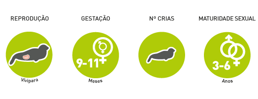

Foka zwyczajna
Phoca vitulina
Rząd:drapieżne
Rodzina:fokowate
Charakterystyka

Długość ciała dorosłych samców sięga 180 cm. Dymorfizm płciowy nie jest zaznaczony. Ubarwienie od jasnoszarego do ciemnobrązowego. Fokę pospolitą cechuje słaby węch, ale bardzo dobry słuch oraz doskonały wzrok
Tryb życia
Foka unika wypływania na otwarte wody. Żyje zazwyczaj w wodach płytkich przy kamienistych wybrzeżach. Czasami spotyka się ją blisko ujść rzek oraz przy niewielkich piaszczystych wyspach. W wodzie foki są niezwykle zwinne i doskonale sobie radzą przy połowie ryb, które są ich podstawowym pożywieniem. Zjadają głównie śledzie i ryby dorszowate. Dietę uzupełniają bezkręgowcami.
Rozmnażanie

Ciąża trwa 9-11 miesięcy. Samica rodzi jedno, czasami dwa młode. Poród następuje na lądzie, ale małe foki już po kilku godzinach wchodzą do wody i doskonale pływają. Matka karmi młode mlekiem przez około 5 tygodni.
Zasięg i siedlisko

Wchodnia i zachodnia Ameryka Północna, południe Grenlandii, północno-zachodnia Europa
Ochrona

Zagrożenia: Najmniejszej troski, populacja liczebności jest wystarczająco rozwinięta, nie potrzebują pielęgnacji ochronnej.
Ciekawostki
- Młode z populacji europejskich już w momencie narodzin mają ostateczne owłosienie podczas kiedy te z Oceanu Spokojnego pokryte są białym, wełnistym futrem.